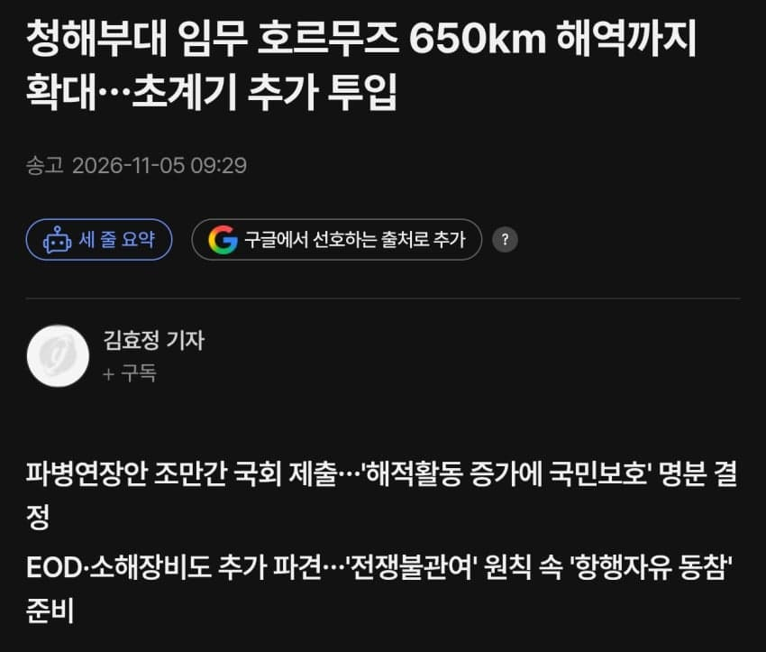
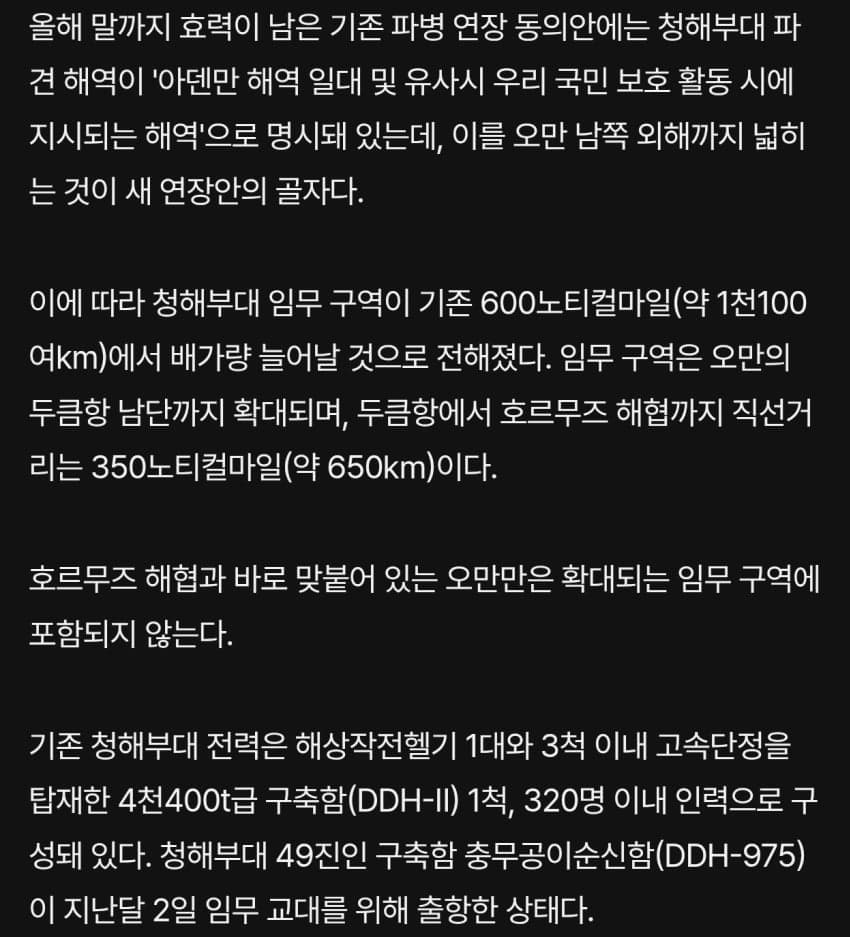
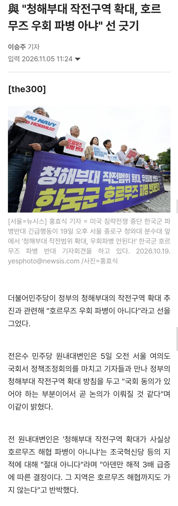

- 관련게시물 : 청해부대, 호르무즈 인근까지 확대 검토…‘우회 파병’ 논란
- 관련게시물 : 채널a) 호르무즈 턱밑 오만만까지...'우회 파병' 검토



- 청해부대 호르무즈 인근까지 작전 구역 확대... "우회 파병은 아냐"

일부 미디어는 원본 링크로 남아 있습니다.
- 관련게시물 : 청해부대, 호르무즈 인근까지 확대 검토…‘우회 파병’ 논란
- 관련게시물 : 채널a) 호르무즈 턱밑 오만만까지...'우회 파병' 검토


- 청해부대 호르무즈 인근까지 작전 구역 확대... "우회 파병은 아냐"
